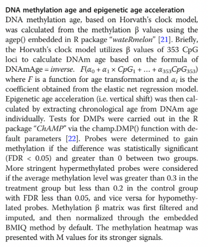
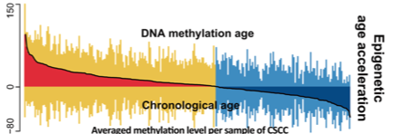

FigureYa215DNAage
Xiaofan Lu; Ying Ge, Yijing Chen
2025-5-20
需求描述
requirement description
求文中甲基化年龄的确定方法。
Determine the method for calculating the methylation age mentioned in the text.

出自https://clinicalepigeneticsjournal.biomedcentral.com/articles/10.1186/s13148-020-0822-y
fromhttps://clinicalepigeneticsjournal.biomedcentral.com/articles/10.1186/s13148-020-0822-y
应用场景
application scenario
根据DNA甲基化beta值计算甲基化年龄，并与真实年龄（chronological age）做差值，计算甲基化年龄加速（Epigenetic age acceleration）。
注意：目前甲基化年龄计算只适用于450k和27k数据，850k不适用
接下来，例文把sample分为两组：DNAmAge-ACC（加速）和DNAmAge-DEC（减速），分别分析DNA甲基化年龄跟其他各项特征之间的关系：例如tumor vs normal，HPV16/18 expression，临床信息，immunoactivation，clinical outcomes。
使用本代码或分析思路请引用：
Lu X, Zhou Y, Meng J, et al. Epigenetic age acceleration of cervical squamous cell carcinoma converged to human papillomavirus 16/18 expression, immunoactivation, and favourable prognosis[J]. Clinical Epigenetics, 2020, 12(1): 1-13.
另外，例文中的Fig.1a可参考FigureYa163twoVarCor； Fig.1e的画法可参考FigureYa162boxViolin； Fig.2b的画法可参考FigureYa60GSEA_clusterProfiler； Fig.4f可参考FigureYa99smoothHR。
大鱼海棠的更多作品看这里：https://k.koudai.com/OFad8N0w
Calculate the methylation age according to the DNA methylation beta value, and make a difference with chronological age to calculate the epigenetic age acceleration.
Note: The calculation of methylation age is currently only applicable to 450k and 27k data and is not suitable for 850k data.
Subsequently, the example text divides the sample into two groups: DNAmAge-ACC (accelerated) and DNAmAge-DEC (decelerated), analysing the relationship between DNA methylation age and various other features: such as tumour versus normal, HPV16/18 expression, clinical information, immunoactivation, and clinical outcomes.
When using this code or analytical approach, please cite:
Lu X, Zhou Y, Meng J, et al. Epigenetic age acceleration of cervical squamous cell carcinoma converged to human papillomavirus 16/18 expression, immunoactivation, and favourable prognosis[J]. Clinical Epigenetics, 2020, 12(1): 1-13.
Additionally, for Fig.1a in the example text, you can refer to FigureYa163twoVarCor; For the drawing method of Fig.1e, you can refer to FigureYa162boxViolin; For the drawing method of Fig.2b, you can refer to FigureYa60GSEA_clusterProfiler; for Fig.4f, you can refer to FigureYa99smoothHR.
For more works by Big Fish & Begonia, see: https://k.koudai.com/OFad8N0w
环境设置
environment setting
使用国内镜像安装包
use the domestic mirror installation package
xxxxxxxxxxoptions("repos"= c(CRAN="https://mirrors.tuna.tsinghua.edu.cn/CRAN/"))options(BioC_mirror="http://mirrors.tuna.tsinghua.edu.cn/bioconductor/")BiocManager::install("ChAMP")加载包
load package
xlibrary(ChAMP)library(wateRmelon)library(data.table)
Sys.setenv(LANGUAGE = "en") #显示英文报错信息 display English error messagesoptions(stringsAsFactors = FALSE) #禁止chr转成factor prohibit the conversion of chr to factor输入文件
Input file
easy_input_age.txt，临床真实年龄。
HumanMethylation450，CESC的DNA甲基化数据beta value。下载自https://xenabrowser.net/datapages/?dataset=TCGA.CESC.sampleMap%2FHumanMethylation450&host=https%3A%2F%2Ftcga.xenahubs.net&removeHub=https%3A%2F%2Fxena.treehouse.gi.ucsc.edu%3A443，已上传至微云https://share.weiyun.com/o1g5N29h
easy_input_age.txt, clinical chronological age.
HumanMethylation450, CESC DNA methylation data beta values. Downloaded from https://xenabrowser.net/datapages/?dataset=TCGA.CESC.sampleMap%2FHumanMethylation450&host=https%3A%2F%2Ftcga.xenahubs.net&removeHub=https%3A%2F%2Fxena.treehouse.gi.ucsc.edu%3A443 and uploaded to Weiyun https://share.weiyun.com/o1g5N29h
xxxxxxxxxx## 读取临床真实年龄## Read clinical chronological ageage <- read.table("easy_input_age.txt",sep = "\t",row.names = 1,check.names = F,stringsAsFactors = F,header = T)head(age)
## 快速加载DNA甲基化数据## Quickly load DNA methylation dataorgmeth <- fread("HumanMethylation450") orgmeth <- as.data.frame(orgmeth); rownames(orgmeth) <- orgmeth[,1]; orgmeth <- orgmeth[,-1]orgmeth[1:3,1:3] # 查看一下数据 Check the datacolnames(orgmeth) <- paste0("CESC",substr(colnames(orgmeth),8,15)) # 替换样本名和年龄匹配（这一步不是必须的） Replace the sample names and match the ages (this step is not necessary)
tum.sam <- colnames(orgmeth[,which(substr(colnames(orgmeth),11,12) == "01")]) # 提取原位癌样本 Extract samples of carcinoma in situnor.sam <- colnames(orgmeth[,which(substr(colnames(orgmeth),11,12) == "11")]) # 提取癌旁正常样本 Extract normal tissue samples adjacent to cancer tissueorgmeth <- orgmeth[,c(tum.sam,nor.sam)] # 对数据做肿瘤、癌旁的排序 Sort the data into tumor and adjacent tissueorgmeth <- as.data.frame(na.omit(orgmeth)) # 去除空值 Remove null values计算甲基化年龄
Calculate methylation age
甲基化数据过滤及标准化
Methylation data filtering and standardisation
xxxxxxxxxxpd <- data.frame(Sample_Name = colnames(orgmeth), Sample_Group = rep(c("T","N"),c(length(tum.sam),length(nor.sam))), row.names = colnames(orgmeth), stringsAsFactors = F)
myFilter <- champ.filter(beta = as.matrix(orgmeth), arraytype = "450K", # 平台使用的是甲基化450K The platform utilises the Methylation 450K pd = pd, filterNoCG = T, # 非CG位点被移除 Non-CG sites are removed filterSNPs = T, # 靠近SNP位点的CpG被移除 CpG sites near SNP locations are removed filterMultiHit = T, # 探针对应多个位点的被移除 Probes corresponding to multiple sites are removed filterXY = T, # 移除性染色体 Remove sex chromosomes fixOutlier = T, # 修正极端值 Correct extreme values autoimpute = F) # 不填补缺失值 Do not impute missing values
# 速度较慢请耐心，我跑了30min左右# It is slow, please be patient, it took me about 30 minutes to run.myFilter <- champ.norm(as.matrix(myFilter$beta), method = "BMIQ", # 使用BMIQ法对数据进行标准化 Standardise the data using the BMIQ method plotBMIQ = F, # 不绘制相关标准化图像 Do not draw the relevant standardised images cores = 1, # 单核运行 Single-core operation arraytype = "450K") # 平台采用甲基化450K The platform utilises methylation 450Ksave(myFilter,file = "meth.filter.norm.rda") # 保存数据，方便后续使用 Save the data for future use计算甲基化年龄
Calculate methylation age
xxxxxxxxxxdnamage <- agep(myFilter[,tum.sam], coeff=NULL)dnamage <- as.data.frame(dnamage); colnames(dnamage) <- "dnamage"
# 计算生理年龄和实际临床年龄的差异# Calculate the difference between physiological age and actual clinical agednamage$cage <- age[tum.sam,"Age"] # 加上临床年龄（clinical age） Add clinical agednamage$diff <- dnamage$dnamage - dnamage$cage # 定义DNAmAge-ACC（加速）和DNAmAge-DEC（减速）# 若差异为正，则为甲基化年龄加速，否则为减速# Define DNAmAge-ACC (accelerated) and DNAmAge-DEC (decelerated)# If the difference is positive, methylation age is accelerated; otherwise, it is decelerated.dnamage$agestatus <- ifelse(dnamage$diff > 0, "Accelerated","Decelerated") dnamage <- as.data.frame(na.omit(dnamage))sam.order <- rownames(dnamage)[order(dnamage$diff,decreasing = T)]acc.num <- table(dnamage$agestatus)[1]dec.num <- table(dnamage$agestatus)[2]# 保存到文件# Save to filewrite.table(dnamage, "DNA methylation age and clinical age.txt",sep = "\t",row.names = T,col.names = NA,quote = F)开始画图
Start drawing
用以上结果可以画出例文Fig. 3的中间部分，对比DNA甲基化年龄和真实年龄的acceleration
Using the above results, the middle section of Example Fig. 3 can be plotted, comparing the acceleration between DNA methylation age and chronological age

图3 两个DNA甲基化年龄组间CpG岛的差异DNA甲基化模式。在DNAmAge-ACC组中，共鉴定出142个严格标准的超甲基化探针和7个低甲基化探针。基于DNA甲基化M值的热图显示，表观遗传年龄加速、免疫激活与CpG岛超甲基化呈共发生现象。DMPs：差异甲基化探针
Fig. 3 Differential DNA methylation pattern in CpG islands between two DNAm age groups. A total of 142 stringent hypermethylated probes and 7 hypomethylated probes were identified for the DNAmAge-ACC group. The heatmap based on DNA methylation M values demonstrates a co-occurrence of epigenetic age acceleration and immunoactivation as well as CpG island hypermethylation. DMPs: differentially methylated probes
xxxxxxxxxx# 设置颜色# Set colourjco <- c("#2874C5","#EABF00","#868686","#C6524A","#80A7DE")sun <- "#E53435"darkblue <- "#1d00ff"
pdf("barplot for DNA methylation acceleration.pdf",width = 6,height = 4)par(mai = c(1,0.5,0.3,0.1))# 画x轴上方的甲基化年龄# Plot the methylation age above the x-axisbarplot(dnamage[sam.order,"dnamage"], axes = F, col = rep(ggplot2::alpha(jco[2:1],0.8),c(acc.num,dec.num)), border = NA, space = 0, ylim = c(-80,150)) # 根据自己的数据酌情修改 Modify as appropriate based on your own data# 画x轴下方的临床实际年龄# Plot the clinical actual age below the x-axisbarplot(-dnamage[sam.order,"cage"], axes = F, col = rep(ggplot2::alpha(jco[2:1],0.8),c(acc.num,dec.num)), border = NA, space = 0, add = T)# 补齐y轴# Complete the y-axisaxis(side = 2,at = c(-80,0,150),labels = c(-80,0,150))# 添加甲基化与临床真实年龄的差异# Add the difference between methylation age and clinical actual agebarplot(dnamage[sam.order,"diff"],axes = F,col = rep(ggplot2::alpha(c(sun,darkblue)),c(acc.num,dec.num)),border = NA,space = 0,add = T)# 添加一条拟合黑线# Add a fitted black linepar(new=T)lines(1:nrow(dnamage),dnamage[sam.order,"diff"],lwd=1.5)# 添加文字# Add texttext(nrow(dnamage)/2, 140, "DNA methylation age", cex = 1.6)text(nrow(dnamage)/2, -70, "Chronological age", cex = 1.6)invisible(dev.off())Session Info
会话信息
xxxxxxxxxxsessionInfo()